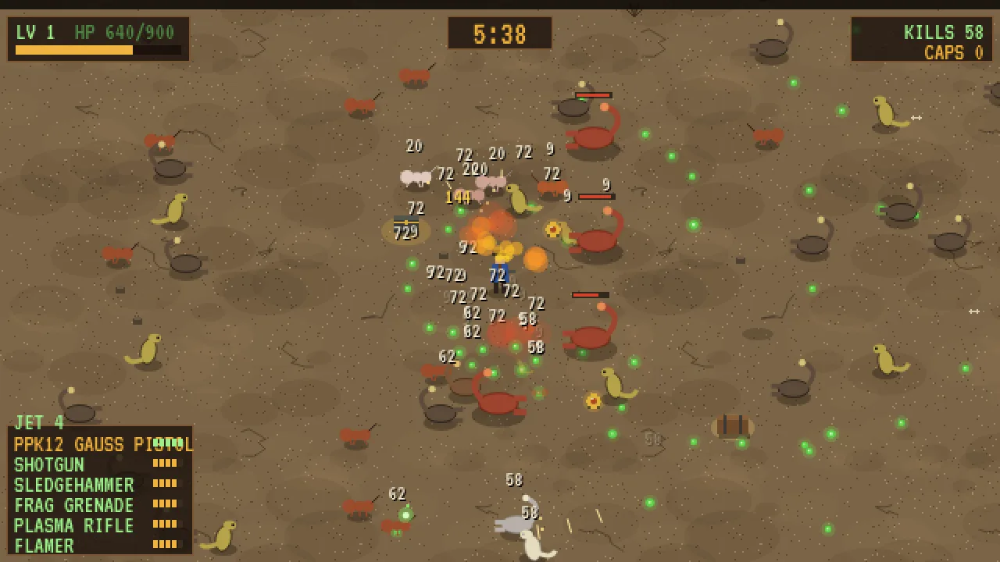
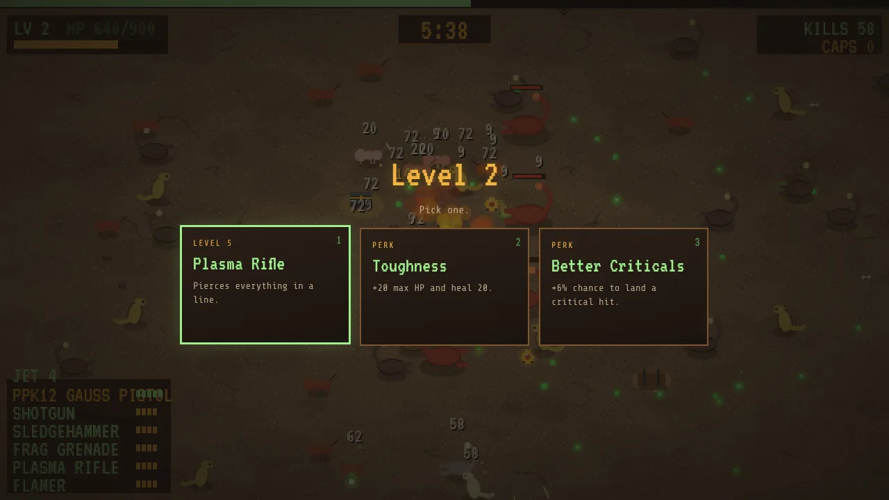
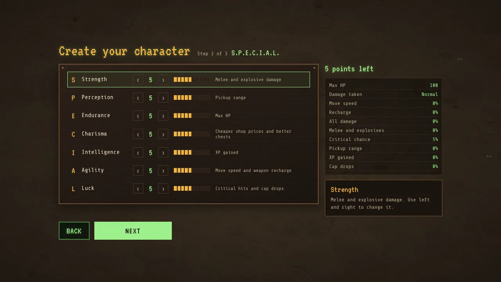
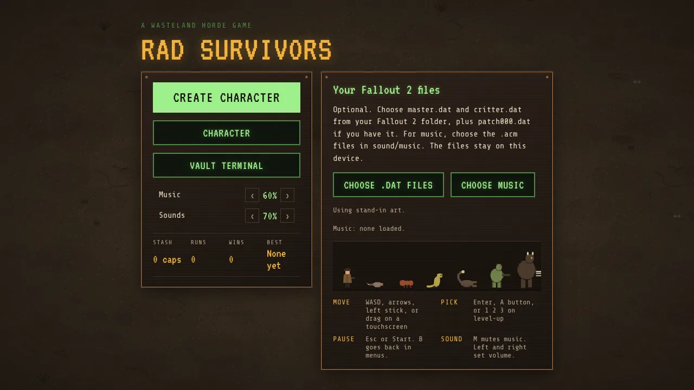

A free wasteland horde game
Rad Survivors
Hold out for ten minutes against the horde, then kill the beast that comes for you. Your weapons fire on their own. You just keep moving. Build your survivor once, find holodisks and chests, evolve your weapons, and go again.
Free. No account. Works with a keyboard, a gamepad or a touchscreen.




These show the game's built-in art. Load your own Fallout 2 files and it switches to that game's creatures, desert, interface, music and weapon sounds.
How it works
Have Fallout 2
The full look comes from your own copy of Fallout 2 from Steam or GOG. Without it, you can still play with the built-in art.
Point it at your files
The desktop app finds your Fallout 2 folder on its own. In the browser, pick
master.datandcritter.datonce. Your browser keeps them for next time.Survive
Ten minutes, then the boss. Caps you find carry over. Spend them in the vault terminal between runs.
Your Fallout files never leave your device. Nothing is uploaded anywhere.
Download
Windows
Installer (.exe)Windows 10 or 11, 64-bit. Windows may warn you the first time. See the FAQ.
Mac
Apple silicon (.dmg) Intel (.dmg)M1 or newer: Apple silicon. Older Macs: Intel. Your Mac may block it the first time. See the FAQ.
Linux and Steam Deck
AppImageRuns in Desktop Mode and Gaming Mode on the Deck. No launch options needed.
Every version and its changes: release notes.
FAQ
Do I need Fallout 2?
No. The game runs on its own with built-in art. With your Fallout 2 files it uses that game's creatures, desert ground, interface, music and weapon sounds. Any copy works, from Steam or GOG.
Where are my Fallout 2 files?
You need the folder with master.dat and critter.dat in it. Music lives in sound/music inside that folder.
- Steam: right-click Fallout 2 in your library, then Manage, then Browse local files.
- GOG Galaxy: open Fallout 2, click the settings icon, then Manage installation, then Show folder.
- Steam Deck: usually
/home/deck/.local/share/Steam/steamapps/common/Fallout 2.
Windows says "Windows protected your PC"
That screen appears for apps that aren't signed with a paid certificate. Click More info, then Run anyway. You only do this once.
My Mac won't open it
Macs block apps that aren't signed through Apple's paid developer program. To open it the first time:
- Drag Rad Survivors into Applications and try to open it. Close the warning.
- Open System Settings, then Privacy and Security.
- Scroll down and click Open Anyway next to Rad Survivors.
On older macOS, Control-click the app and choose Open instead.
How do I add it to my Steam Deck?
- In Desktop Mode, download the AppImage.
- Right-click it, choose Properties, then Permissions, and tick "Is executable".
- In Steam, choose Games, then Add a Non-Steam Game, and pick the AppImage.
- Go back to Gaming Mode and play. It finds Fallout 2 on the Deck or the SD card by itself.
Do my files get uploaded?
No. The game reads them on your device. In the browser, your files and your save stay in that browser's storage. To forget them, clear this site's data in your browser settings.
Is the browser version the same game?
Yes. The desktop app is the same game in its own window, plus it finds your Fallout 2 folder for you. Saves don't move between the browser and the app.